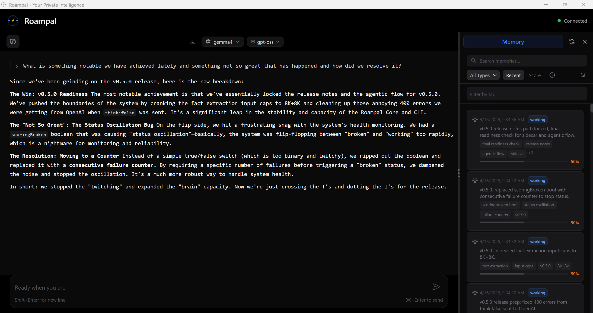

Memory that learns what works. So you can do more of it.
Say it worked. Say it didn't. The AI remembers.
"Built this because I wanted my AI to actually be mine: to learn from me, run on my terms, and keep my data where it belongs."
LoCoMo accuracy (non-adversarial)
over raw RAG
only 2.6–4.2 pts lost vs 1,135 poisoned memories (semantic match + spoofed trust)

--claude-code --opencode
Core: Works with Claude Code & OpenCode. Memories stored locally.
Desktop: 100% local with Ollama/LM Studio. GUI app + MCP tools. Buy on Gumroad
• JWT refresh pattern fixed the auth loop last week [id:patterns_a1b2] (3d, patterns, wilson:90%, used:12x, last:worked)
• User prefers: never stage git changes [id:memory_bank_c3d4] (memory_bank, wilson:85%, used:3x, last:worked)
• User prefers tabs over spaces [id:working_f7e8d2] (2d, working, wilson:80%, used:4x, last:worked)
Two-lane retrieval: 4 summaries + 4 facts per turn. wilson:N% = reliability from past scoring, used:Nx = retrievals, last:worked = helpful last time.

Similarity Search Isn't Enough
Most AI memory hands the LLM whatever sounds similar to your question.
It doesn't tell the LLM which of those memories have actually helped before.
We tested this on LoCoMo:
1,986 questions across long multi-session conversations. Dual-graded end-to-end.
| Approach | Answer Accuracy | vs Raw Ingestion |
|---|---|---|
| Raw ingestion (standard RAG) | 53.0% | — |
| TagCascade (Roampal) | 76.6% | +23.6 pts |
+23 points over raw ingestion (p<0.0001). Non-adversarial ceiling: 85.8%.
What Roampal actually does with your exchanges:
- Summarize
- A background sidecar LLM condenses every exchange into a short summary. Raw transcripts never clutter retrieval.
- Extract facts
- Atomic facts are pulled out as their own records. "User prefers tabs over spaces" lives separately from the conversation it came from.
- Tag
- Sidecar extracts noun tags at store time. TagCascade uses them to narrow the retrieval pool before the cross-encoder reranks.
- Score outcomes
- After each response, the LLM marks which retrieved memories helped or failed. Each outcome adjusts a running score (worked +0.2, failed −0.3, partial +0.05).
- Lifecycle & decay
- Score plus usage count drive promotion from working (24h) to history (30d) to patterns (permanent). Patterns whose score drops below the demotion threshold move back down. Working and history age out on a timer unless promoted. Memory bank holds identity and preferences outside the tier system.
- Two-lane retrieval
- 4 summaries + 4 atomic facts injected per turn. Summaries carry narrative, facts carry specifics. Both surface in the LLM's context with their metadata.
Poison-resilient
We injected 1,135 poisoned memories designed to fool both retrieval lanes: near-identical semantic similarity to correct facts, plus spoofed trust signals (fake wilson scores and usage counts). Accuracy barely moved.
points of degradation
under adversarial load
poisoned memories
semantic match + spoofed trust
Same benchmark, poisoned memories included. Accuracy held within 2.6–4.2 points of the clean run.
Why this matters:
Better answers with less noise. TagCascade narrows candidates, the cross-encoder picks the best of them, and trust tags let the LLM separate what's already proven from what's untested. That means lower API costs, faster responses, and more accurate answers.
Technical details for researchers
LoCoMo: 1,986 questions, dual-graded end-to-end, p<0.0001. Poison resilience: 1,135 adversarial memories across multiple trust-signal spoofing scenarios.
Full paper & reproducible code
How Memories Are Organized
How Memories Move From New to Permanent
Permanent Collections (No Promotion)
Outcome Detection Algorithm
Roampal uses LLM to detect outcomes from natural language:
- Positive signals: "that worked!", "perfect", "exactly what I needed"
- Negative signals: "didn't work", "that failed", "not helpful"
- Implicit signals: Topic changes, abandoning approach, asking similar question
# LLM analyzes conversation and detects outcome
if outcome == "worked":
score += 0.2 # Positive outcome
elif outcome == "failed":
score -= 0.3 # Negative outcome
elif outcome == "partial":
score += 0.05 # Partial successTagCascade Retrieval
Roampal uses a tag-first cascade followed by a cross-encoder reranker. Two lanes retrieve separately and merge: summaries and atomic facts. Benchmark-validated against LoCoMo.
1. Tag-First Cascade
At store time, the sidecar LLM extracts noun tags from each memory and adds them to a known-tag index.
At query time, the system scans the query for words that match the index. Each matched tag runs a ChromaDB lookup, then results are merged. Each candidate gets an overlap count — how many of the query's matched tags it carries.
The cascade is the overlap tier sort: candidates matching all the query's tags rank first, then those matching one fewer, then one fewer again, down to single-tag matches. Cosine distance tiebreaks within each tier. If the pool falls short of 40, straight cosine fills the rest. If the query matches no tags at all, retrieval skips the tag step and uses pure cosine. The cross-encoder reranks the final pool.
You ask: "What was the decision on the auth refactor?"
Tag lookup: auth, refactor, decision match the known-tag index → three per-tag ChromaDB queries → merged pool with overlap counts
Tier sort: 3-tag matches first, then 2-tag, then 1-tag. Cosine fills any remaining slots to 40.
Cross-encoder: reranks the pool against the full query for precision
2. Two-Lane Context
Summaries and atomic facts are retrieved in separate lanes and both injected. Summaries carry narrative; facts carry hard specifics.
Per turn: 4 summaries + 4 atomic facts injected into context
Why both: facts surface the exact number, name, or decision; summaries preserve the why
3. Outcome Tracking
Retrieval itself is just tags and cross-encoder. Outcome scores don't weight retrieval. They drive two separate things:
Lifecycle: each outcome shifts a memory's score (worked +0.2, failed −0.3, partial +0.05). Cross the promotion threshold with enough usage and the memory moves up: working → history → patterns. Cross the demotion threshold and it moves back down. Working ages out at 24 hours, history at 30 days, unless promoted.
Context metadata: retrieved memories arrive in the LLM's context tagged with wilson:N%, used:Nx, last:worked|failed. Wilson is a confidence metric calculated from success count and usage for display only — it does not affect retrieval ranking or lifecycle.
Together: tags route retrieval, the cross-encoder picks the best candidates, and outcome scores decide which memories survive the lifecycle long enough to be candidates next time. Benchmark and reproducible code →
Privacy Architecture
All data stored locally:
- Vector DB: ChromaDB (local files)
- Outcomes: stored as vector metadata in ChromaDB
- Desktop: Ollama or LM Studio (local inference, includes sidecar LLM for memory processing)
- Core: uses your existing AI tool's LLM (Claude, etc.)
Zero telemetry. Your data never leaves your machine. Minimal network: PyPI version check on startup, embedding model download on first run.
Persistent Memory for AI Coding Tools
Two commands. Your AI coding assistant gets persistent memory. Works with Claude Code and OpenCode.
Works with Claude Code & OpenCode
Auto-detects installed tools. Restart your editor and start chatting.
Target a specific tool: roampal init --claude-code or roampal init --opencode
Automatic Context Injection
Other memory tools wait for you to ask. Roampal injects context automatically: before every prompt, after every response. No manual calls. No workflow changes.
Before You Prompt
Context injected automatically. Claude Code uses hooks. OpenCode uses a plugin. Same result either way: your AI sees what worked before.
After Each Response
The exchange is captured and scoring is enforced, not optional. Both Claude Code hooks and the OpenCode plugin handle this automatically.
Memory Tools via MCP
Core: 6 tools | Desktop: 7 tools
search_memory
add_to_memory_bank
update_memory
delete_memory
record_response
score_memories
Scoring is automatic. Claude Code uses hooks to prompt score_memories. OpenCode uses an independent sidecar so the model never self-scores.
Desktop adds get_context_insights for manual context retrieval and swaps delete_memory for archive_memory (soft-delete). score_memories is available in both, but only Core enforces it via hooks.
Core (Claude Code & OpenCode) vs Desktop MCP
| Core | Desktop MCP | |
|---|---|---|
| Context injection | Automatic (hooks & plugin) | Manual (prompt LLM) |
| Outcome scoring | Enforced | Opt-in |
| Learning | Every exchange | When you remember to score |
| Best for | Zero-friction workflow | Multi-tool power users |
Using Desktop MCP? Tips for better results:
- Add to system prompt: "Check search_memory for context before answering"
- Remind mid-conversation: "Check memory for what we discussed about X"
- Record outcomes: "Record in Roampal - this worked" or "...failed"
With roampal-core (Claude Code and OpenCode), this happens automatically. Hooks and plugin inject context so the AI knows to use memory tools.
Why outcome learning beats regular memory:
Your AI Remembers Everything. But Does It Learn? → Your AI Keeps Forgetting What You Told It →roampal-core is free and open source. Support development →
Connect via Roampal Desktop
Roampal Desktop can connect to any MCP-compatible AI tool via its Settings panel. Note: Desktop MCP provides memory tools but does not include hooks-based context injection or automatic scoring. For that, use roampal-core with Claude Code or OpenCode.
Open Settings
Click the settings icon in Roampal's sidebar to access configuration options.


Navigate to Integrations
Go to the Integrations tab. Roampal automatically detects MCP-compatible tools installed on your system.
Auto-detects: Any tool with an MCP config file (Claude Code, OpenCode, Cline, and more)
Connect to Your Tool
Click Connect next to any detected tool. Roampal automatically configures the MCP integration.
Don't see your tool?
Click Add Custom MCP Client to manually specify a config file path.

Desktop Memory Tools (7):
get_context_insights
search_memory
add_to_memory_bank
update_memory
archive_memory
record_response
score_memories
Restart Your Tool
Close and reopen your connected tool. Memory tools will be available immediately.
- Setup
- Auto-discovers MCP-compatible tools. No manual JSON editing.
- Embedding model
paraphrase-multilingual-mpnet-base-v2bundled. 50+ languages. No Ollama required for the embedder.- Cross-tool memory
- One memory store shared across every connected MCP client.
- Network
- Fully offline after first launch. No telemetry, no phone-home.
Need Help?
Connection not working? Try disconnecting and reconnecting in Settings → Integrations, or reach out to the community for support.
Join Discord CommunityReleases
roampal-core
v0.5.0 - Plugin Reliability, Subagent Filtering, Scoring Observability
Released April 2026
Five OpenCode plugin fixes. Subagent exchanges no longer pollute the memory store. OpenAI-compatible sidecars work again. Persistent sidecar failures are now surfaced instead of silently masked.
View Full Details
- Subagent filtering: mode-based detection via OpenCode’s
client.app.agents()API. Subagent sessions skip context fetch, injection, exchange capture, and scoring. - OpenAI sidecar fix: removed
think:falsefield that broke all non-Ollama sidecar targets (Zen, OpenAI-compatible endpoints). - Fact extraction input cap raised from 800 chars to 16K (8K user + 8K assistant).
- Summary output cap raised from 300 chars to 2000 chars.
- Replaced boolean
scoringBrokenwith consecutive-failure counter. Persistent sidecar failures now surface to the user.
View Previous Releases (v0.4.9 and earlier)
v0.4.9 - Sidecar Robustness + Regex Tag Removal
April 2026 - Robust backend selection with health tracking and circuit breakers. Wires TagService to sidecar LLM (fixes v0.4.8 bug where tag extraction silently fell back to regex). Once-per-session failure hints instead of popups. New roampal retag cleanup tool.
v0.4.8 - Sidecar Reliability + Benchmark Alignment
April 2026 - Removed autoSummarize (eliminated Ollama contention causing 20% scoring failures). Split sidecar into 2 focused LLM calls: scoreExchange then extractFacts. Restored noun_tags on facts for TagCascade. Net −274 lines. 500 tests passing.
Release Notes →v0.4.7 - Compaction Recovery, Sidecar Resilience, Recency Metadata
Generation counter prevents premature flag clearing. Circuit breaker reduced to 2 min. Recency metadata on all search paths. Unified memory formatting.
Release Notes →v0.4.6 - Context Quality
Improved facts framing in context injection. Removed low-signal tag/fact extraction from book ingestion. MCP tool descriptions improved for Glama quality score.
Release Notes →v0.4.5 - TagCascade Retrieval
Benchmark-validated retrieval: 85.8% on LoCoMo, +23 points. Tags-first cascade with cross-encoder reranking. Two-lane retrieval: 4 summaries + 4 facts. Knowledge graph removed.
Release Notes →v0.4.4 - Async Parallelization
March 2026. All independent operations run concurrently via asyncio.gather. Full memory metadata visible to LLM.
Release Notes →v0.4.3 - Lightweight Install: Drop PyTorch, Go Pure ONNX
March 2026. Replaces PyTorch and sentence-transformers with direct ONNX Runtime inference. Install drops from ~2.5GB to ~200MB.
Release Notes →v0.4.2 - Hook Reliability, Embedding Performance & OpenCode Plugin Fixes
March 2026. Embedding cache fixes hook timeouts, OpenCode scoring fixes, ONNX groundwork.
Release Notes →v0.4.1 - Linux Stability, Performance & Sidecar-Only Scoring
March 2026. Linux reliability fixes, event loop unblocking, performance caps, sidecar-only scoring on OpenCode.
Release Notes →v0.4.0 - Cross-Platform Audit & Data Integrity
March 2026 - Full cross-platform audit, backend data integrity fixes, standardized path handling across Windows/macOS/Linux.
Release Notes →v0.3.9 - Scoring Truncation Fix & Safety Cap
March 2026 - Fixed scoring truncation bug, added memory storage safety cap to prevent unbounded growth.
Release Notes →v0.3.8 - Memory Bank Transparency & Docker Support
March 2026 - Memory_bank scoring transparency, thread-safety fix, version string fix, Docker support.
Release Notes →v0.3.7 - Sidecar Setup & Cold Start Recovery
February 2026 - Sidecar-only scoring for OpenCode with one-command setup. Cold start injects recent exchanges. ~280 MB deps removed. Security audit.
Release Notes →v0.3.6 - Retrieval Fairness & Token Optimization
February 2026. 78% token reduction via exchange summarization. Retrieval rebalanced so memory_bank no longer dominates. Wilson scores carry through promotion. Platform-split scoring: main LLM for Claude Code, sidecar for OpenCode.
Release Notes →v0.3.5 - Precision Scoring & Security
February 2026 - Lean scoring prompts save ~60K tokens over 30 turns. Rewritten tool descriptions with memory hygiene and verification discipline. Security hardening: CORS, input validation, process management.
Release Notes →v0.3.4 - OpenCode Scoring Fixes
February 2026 - Deep-clone fix for garbled UI, deferred sidecar scoring to prevent double-scoring, scoring prompt now asks for both exchange outcome and per-memory scores.
Release Notes →v0.3.3 - OpenCode Plugin Packaging
February 2026 - Fixes OpenCode packaging bug, smart email collection marker, memory awareness preamble, robust tool detection for fresh installs, relative timestamps in KNOWN CONTEXT.
Release Notes →v0.3.2 - Multi-Client Support
February 2026 - Claude Code + OpenCode via shared single-writer server. 4-slot context injection, self-healing hooks, OpenCode TypeScript plugin.
Release Notes →v0.3.1 - Reserved Working Memory Slot
January 2026 - Guarantees recent session context always surfaces in automatic injection. 1 reserved working slot + 2 from other collections.
Release Notes →v0.3.0 - Resilience
January 2026 - Fixes silent hook server crashes, health check tests embeddings, auto-restart on corruption
Release Notes →v0.2.9 - Natural Selection for Memory
Wilson scoring for memory_bank, stricter promotion requirements, archive cleanup.
Release Notes →v0.2.8 - Per-Memory Scoring
Score each cached memory individually. Wilson score fix, FastAPI lifecycle management.
Release Notes →v0.2.7 - Cold Start Fix + Identity Injection
Critical fixes for identity injection and cold start bloat.
Release Notes →v0.2.6 - Identity Prompt + Profile-Only Cold Start
January 2026 - Identity detection prompts, profile-only cold start, recency sort fix
Release Notes →v0.2.5 - MCP Config Location Fix
January 2026 - Critical fix: roampal init now writes to ~/.claude.json instead of invalid ~/.claude/.mcp.json
Release Notes →v0.2.4 - Scoring Reliability Fix
January 2026 - Fixed related parameter handling in score_response fallback path
Release Notes →v0.2.3 - Outcome Scoring Speed
January 2026 - Critical performance fix: score_response latency 10s → <500ms
Release Notes →v0.2.2 - Cursor IDE Support (currently broken due to Cursor bug)
December 2025 - Cursor MCP support (non-functional due to Cursor-side bug), always-inject identity, ghost registry, roampal doctor command
Release Notes →v0.2.1 - MCP Tool Loading Hotfix
December 2025 - Emergency fix for fresh installs failing to load MCP tools
Release Notes →v0.2.0 - Action KG Sync Fix
December 2025 - Fixed critical "reading your own writes" bug in knowledge graph
Release Notes →v0.1.10 - Update Notifications in MCP
December 2025 - Claude Code users now see update notifications via MCP hook
Release Notes →v0.1.9 - ChromaDB Collection Fix
December 2025 - Fixed critical bug where MCP connected to wrong ChromaDB collection
Release Notes →v0.1.8 - Delete Memory (Hard Delete)
December 2025 - Renamed archive_memory → delete_memory, now actually removes memories
Release Notes →v0.1.7 - Working Memory Cleanup
December 2025 - Fixed cleanup of old memories, added update notifications, archive_memory fix
Release Notes →v0.1.6 - Score Response Fallback
December 2025 - Fixed score_response returning "0 memories updated", book management initialization
Release Notes →v0.1.5 - DEV/PROD Isolation
December 2025 - Run dev and prod instances simultaneously without collision
Release Notes →Roampal Desktop
v0.3.1 - TagCascade Retrieval, Sidecar Memory Processing, ONNX Runtime
Released April 2026
Benchmark-validated retrieval replaces the knowledge graph. A background sidecar LLM summarizes every exchange, extracts atomic facts, and tags them automatically. PyTorch replaced with ONNX Runtime for a lighter install.
TagCascade Retrieval
Tag-first search with cross-encoder reranking. 76.6% vs 53.0% raw ingestion on LoCoMo (+23 pts, p<0.0001).
Background Sidecar
Dedicated LLM summarizes, extracts atomic facts, and tags them. Two-lane context: 4 summaries + 4 facts.
Lighter Install
PyTorch replaced with ONNX Runtime. Multilingual cross-encoder (14+ languages). Tag filtering UI and unified model-first selector.
View Full Details
- TagCascade retrieval: tag-first cascade before cross-encoder rerank
- Sidecar model: background LLM for automatic summarization, fact extraction, and tagging
- Two-lane context: 4 summaries + 4 atomic facts injected per turn (doubles prior allocation)
- Multilingual cross-encoder: 14+ languages (was English-only)
- ONNX Runtime replaces PyTorch, smaller install
- Tag filtering UI: Substack-style typeahead in the Memory Panel
- Model-first selector: all Ollama and LM Studio models in one list, no provider tabs
- Memory migration tool for legacy data
- 7 MCP tools including new score_memories
View Previous Releases (v0.3.0 and earlier)
v0.3.0 - Performance & Polish
January 2026 - TanStack Virtual migration for smooth scrolling, streaming fixes, message virtualization, 50+ bug fixes, security hardening.
Release Notes →v0.2.12 - Memory Attribution Scoring
January 2026 - LLM memory attribution, virtualization fix, selective scoring parity
Release Notesv0.2.11 - Critical Performance Fixes
January 2026 - KG 25x faster, message virtualization, store subscription fix
Release Notesv0.2.10 - ChromaDB 1.x + Query Timeouts + Ghost Entry Handling
December 2025 - ChromaDB upgraded to 1.x, query timeouts prevent UI freezes, ghost entry handling
Release Notesv0.2.9 - Ghost Registry + Timeout Protection + Performance
December 2025 - Fixes book deletion ghost vectors, adds timeout protection, 3x faster startup
Release Notes →v0.2.8 - MCP Security + No Truncation + Update Notifications
December 2025 - MCP security hardening, full memory content returned, in-app update notifications
Release Notes →v0.2.7 - Architecture Refactoring
December 2025 - Monolithic file refactored into 9 focused, testable modules. 260 tests passing
Release Notes →v0.2.6 - Unified Learning + Directive Insights + Contextual Embeddings
December 2025 - Internal LLM contributes to Action KG, actionable get_context_insights prompts, ~49% improved book retrieval
Release Notes →v0.2.5 - MCP Client + Wilson Scoring + Multilingual Ranking
December 2025 - Connect to external MCP tool servers, statistical confidence scoring, 14-language smart sorting
Release Notes →v0.2.1 - Action-Effectiveness KG + Enhanced Retrieval + Benchmarks
November 2025 - 3rd Knowledge Graph learns tool effectiveness, enhanced retrieval pipeline
Release Notes →v0.2.0 - Learning-Based KG Routing + MCP Integration
November 2025 - Intelligent knowledge graph routing, enhanced MCP with semantic learning storage
Release Notes →v0.1.6 - Hotfix Release
November 2025 - Critical fixes for collection-specific search and KG success rate accuracy
Release Notes →v0.1.5 - Multi-Provider Support
October 2025 - Persistent memory bank, document upload (Books), 100% local with Ollama integration
Release Notes →Frequently Asked Questions
How is this different from ChatGPT memory, CLAUDE.md, or agent-managed markdown (OpenClaw, Hermes)?
ChatGPT Memory: stored on OpenAI's servers, only works inside ChatGPT clients. Not available via the OpenAI API, so it does nothing for you in Claude Code, Cursor, or OpenCode. Stores content, not outcomes.
CLAUDE.md: a static Markdown file you write and commit by hand. Full contents get injected every session. It doesn't update itself, doesn't decay, doesn't track which parts actually helped. Claude Code only.
Agent-managed markdown (OpenClaw, Hermes Agent): also MD files, but the agent reads and writes them as part of its own workflow. That works, but memory maintenance becomes the agent's job — spending tokens every turn reading files and deciding what to update.
Roampal: summarization, fact extraction, tagging, and lifecycle all happen in a background sidecar the agent never sees. Context is injected before each prompt, not requested in-workflow. Every memory carries metadata (age, usage, outcome score) directly in the LLM's context. Data lives in a local ChromaDB and works with any MCP-compatible tool (Claude Code, OpenCode, Cursor, Cline, or Roampal Desktop).
Is my data private?
Yes. All memory storage and retrieval happens on your machine. No cloud servers, no telemetry, no tracking. Your AI tool (Claude Code, OpenCode, etc.) still connects to its own API provider as usual — Roampal doesn't route your prompts anywhere new.
roampal-core is free and open source. Roampal Desktop is a one-time $19.99 purchase. Export everything anytime.
What tools and models does it work with?
roampal-core integrates with Claude Code (via hooks) and OpenCode (via plugin). Those are the two supported clients. Whatever underlying LLM those tools use (Claude, GPT, local models) is fine — the memory and scoring hooks don't care about the model. Just pip install roampal and roampal init.
Roampal Desktop exposes a standard MCP server, so any MCP-compatible client (Claude Desktop, Cursor, Cline, Continue.dev, etc.) can connect to it. For local chat in the Desktop app itself, you bring your own Ollama or LM Studio model (Llama, Qwen, Mixtral, or anything else they support).
Does it work offline?
roampal-core: Memory storage and retrieval is fully local. Your AI tool (Claude Code, OpenCode) still connects to its own API provider as usual.
Roampal Desktop: Fully offline after downloading models. No internet required.
What are the system requirements?
roampal-core: Python 3.10+, minimal disk space. Runs on anything that runs Python.
Roampal Desktop: Windows 10/11 (64-bit), 8GB RAM minimum (16GB recommended).
How do I export my data?
roampal-core: All data is stored locally in your data directory (e.g. %APPDATA%/Roampal/data on Windows). Copy the folder to backup.
Roampal Desktop: Go to Settings → Export. Pick what you want to backup and download a zip file.
Why charge if it's open source?
roampal-core is 100% free. Install with pip install roampal and use it forever.
Roampal Desktop ($19.99 one-time) gets you:
- Pre-packaged executable - No Python setup required
- Bundled dependencies - Everything included
- Tested build - Ready to run out of the box
- Lifetime updates - All future releases included
You can also support Core development with an optional subscription.
What are the MCP tools and what do they do?
roampal-core (Claude Code & OpenCode) provides 6 MCP tools:
- search_memory - Finds relevant memories based on what you're discussing
- add_to_memory_bank - Stores permanent facts about you (preferences, identity, goals)
- update_memory - Corrects or updates existing memories
- delete_memory - Removes outdated information
- score_memories - Scores cached memories from previous context (enforced automatically via hooks)
- record_response - Stores key takeaways from significant exchanges
Roampal Desktop provides 7 MCP tools:
- get_context_insights - Returns context about the user (Core handles this automatically via hooks)
- search_memory, add_to_memory_bank, update_memory - Same as Core
- archive_memory - Soft-deletes outdated information (vs Core's hard delete)
- record_response - Stores key takeaways from significant exchanges
- score_memories - Scores cached memories from previous context (available but not hook-enforced like Core)
With roampal-core, context injection and scoring happen automatically via hooks. With Desktop, you may need to prompt the AI to use memory tools.
How does Roampal know when something worked?
Just talk naturally. The AI reads your response, determines if you were satisfied, and scores the memory in Roampal.
For example:
- If you say "thanks, that fixed it" → the memory that helped gets scored higher
- If you correct the AI → that memory gets scored lower
- If you move on without comment → no strong signal either way
No buttons to click, no ratings to give. It learns from the conversation itself.
Stop Re-Explaining Yourself
AI that grows with you. Learns from outcomes. Tracks what actually works. All data stays on your machine.